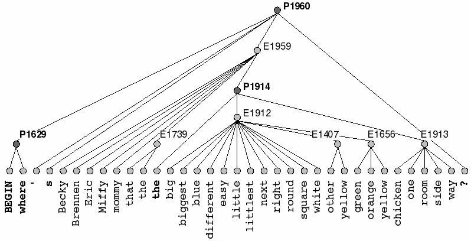

Unit 12: language III

language learning and use

Computational modeling of language acquisition (and use) —
- Kinds of language structure and how to find them in a corpus
- The role of probabilities in learning and using language
- A modest example: machine translation
a corpus of utterances has the form of a GRAPH, which can be
used for alignment and comparison
Collocations, equivalences, and other
dependencies can be discovered by aligning and
comparing paths through the corpus graph.
patterns over patterns ("going recursive")
Recursive application of pattern extraction by the ADIOS
algorithm to a corpus of data
yields hierarchical tree-like structures ("rules").
[Z. Solan, D. Horn, E. Ruppin and S. Edelman, (2005). Unsupervised Learning of Natural Languages,
Proc. Natl. Acad. Sci. 102:11629-11634.]
[The results shown here are from
the ATIS (Air Traffic Information System) corpus.]
patterns/constructions are generative; they FORM
meaningful TOOLS

A pattern learned from the CHILDES corpus, which generates such sentences as:
where's the big room?
where's the yellow one?
where's Becky?
where's that?
this kind of learning works not just in English
Half of these sentences are from one of the Mandarin corpora
in CHILDES. The other half were generated by the ADIOS
algorithm after learning from these corpora.
populating the open slots in the patterns: probabilities at work
Conditional probabilities on constructions: selection ("food"
vs. "victuals")
Conditional probabilities on constructions: dependencies
("served" vs. "serving")
The structural/statistical
language model learned by the ADIOS algorithm
captures those probabilities and puts them to use.
So it cannot be just rules!
populating the open slots in the patterns: probabilities at work

Getting these probabilities wrong is often the downfall of
Internet scams.
"obligatory to follow" WTF?
the probability of "obligatory to follow"

745
Ghits for "obligatory to follow"
the probability of "must be followed"

5,650,000 Ghits for "must be followed"
...but even this sounds off in the context of a letter
from a bank... (a propos
pragmatics, register, etc.)
in conclusion: still a long way to go